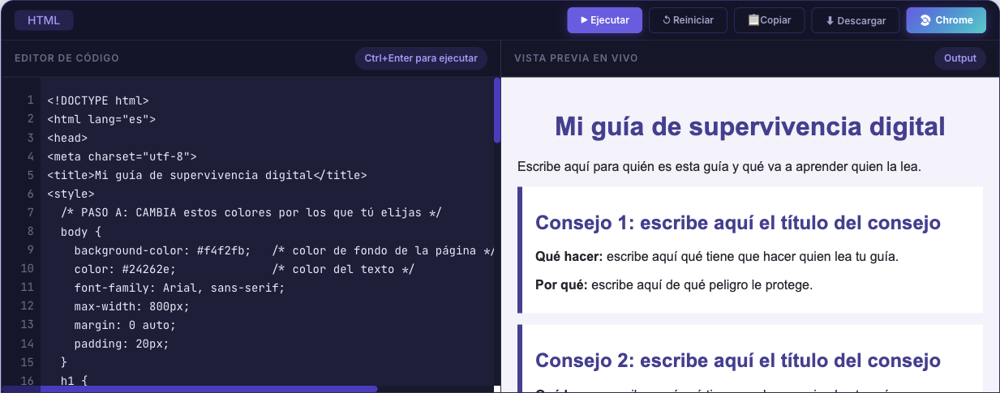

Tarea 1 de 3. Se entrega en Classroom, en la tarea «Tarea 1 · Mi guía de supervivencia digital».
Qué vas a hacer
Vas a crear una página web con 5 consejos para protegerse en internet, como una guía para alguien que acaba de estrenar su primer móvil.
No empiezas de cero: tienes una plantilla con la página ya montada. Tú escribes los consejos, cambias el título y le pones tus colores.
- Tiempo: unas 3 o 4 horas. Puedes hacerlo en varios ratos.
- Qué necesitas: un ordenador con internet. No hay que instalar nada ni crear cuentas.
- Qué entregas: un archivo llamado
code.html.
Paso a paso
Paso 1 · Prepara tus consejos
Abre un documento nuevo de Google Docs con tu cuenta del instituto. Ahí vas a escribir primero tus consejos, con calma, antes de pasarlos a la web.
Tienes que dar un consejo de cada uno de estos temas:
- Contraseñas.
- Verificación en dos pasos (el código que te llega al móvil al iniciar sesión).
- Virus y otro malware (actualizaciones, antivirus, qué descargas).
- Phishing: mensajes y correos trampa.
- Privacidad en redes sociales: lo que publicas y quién lo ve.
De cada consejo escribe dos cosas: qué hacer y por qué (de qué peligro te protege). Busca la información en incibe.es/menores, la web oficial de seguridad en internet para jóvenes, y escríbelo con tus palabras: no copies y pegues frases de la web.
Ejemplo de un buen consejo (de otro tema)
Título: No hagas nada importante con una wifi pública.
Qué hacer: en la wifi abierta de una cafetería o un centro comercial no entres en tu banco ni escribas contraseñas; para eso usa los datos del móvil.
Por qué: en una red abierta, otra persona conectada podría ver lo que envías.
Fíjate en que dice algo concreto que se puede hacer. «Ten cuidado en internet» no sería un buen consejo.
Paso 2 · Abre el editor y pega la plantilla
- Abre el editor HTML Code Runner. Funciona en el navegador y no pide cuenta.
- Haz clic dentro del recuadro oscuro de la izquierda, donde está el código. Pulsa Ctrl + A y después Supr: así borras el ejemplo que trae el editor.
- Abre la plantilla de la guía, que se abre en una pestaña nueva. Pulsa Ctrl + A y luego Ctrl + C para copiarla entera.
- Vuelve a la pestaña del editor, haz clic en el recuadro del código y pulsa Ctrl + V.
- Pulsa «▶ Ejecutar». A la derecha verás tu guía, todavía con los textos de la plantilla.

Ampliar imagen (nueva pestaña)
Paso 3 · Escribe tu guía
En el código, los textos que tienes que cambiar empiezan por «escribe aquí…». Cámbialos por los tuyos:
- Título y presentación (donde pone
PASO B): un título tuyo y una frase que diga para quién es la guía. - Los 5 consejos: pasa a cada recuadro el título, el «qué hacer» y el «por qué» de tu borrador. Encima de cada consejo hay una línea que te dice de qué tema es.
Una regla para no romper nada
Cambia solo el texto que está entre las etiquetas. Las etiquetas son lo que va entre < y >, como <h1> o </p>: déjalas tal cual. Por ejemplo, para cambiar el título:
<h1>Sobrevive en la red</h1>
Pulsa «▶ Ejecutar» a menudo para ver cómo va quedando. Si algo deja de verse bien, revisa lo último que has cambiado.
Paso 4 · Ponle tus colores
Arriba del código, donde pone PASO A, hay colores escritos así: #453f93. Cámbialos por los que tú elijas: como mínimo, el color de fondo y el color de los títulos.
Puedes escribir el nombre de un color en inglés (navy, darkgreen, orange, lightyellow…) o un código de color. Para encontrar códigos, escribe «selector de color» en el buscador. Consejo: fondo claro con letra oscura, para que se lea bien.
Paso 5 · Añade un enlace de ayuda
Al final del código, donde pone PASO C, añade una línea con un enlace a una web donde pedir ayuda. Puedes copiar esta y cambiar el texto a tu gusto:
<p>¿Tienes un problema en internet? Pide ayuda en
<a href="https://www.incibe.es/menores" target="_blank" rel="noopener">
Internet Segura for Kids</a> o llama gratis al 017.</p>Pulsa «▶ Ejecutar» y haz clic en el enlace de la vista previa para comprobar que abre la web.
Paso 6 · Revisa y descarga
Antes de descargar, comprueba que:
- No queda ningún «escribe aquí» en tu guía.
- Los 5 consejos dicen qué hacer y por qué.
- Has cambiado los colores.
- El enlace de ayuda funciona.
Pulsa «⬇ Descargar». Se guarda en tu carpeta de descargas un archivo llamado code.html: ese es el que entregas. No hace falta cambiarle el nombre, y no le pongas el tuyo.
Si has descargado varias veces (por ejemplo, al mejorar tu guía), verás code (1).html, code (2).html…: el de número más alto es el último, y ese es el que subes. Tampoco hace falta cambiarle el nombre.
¡Ojo! El editor no guarda tu trabajo
- Si cierras la pestaña o recargas la página, lo pierdes.
- Si vas a dejarlo a medias, pulsa «📋 Copiar» y pega el código en tu documento de Google Docs. Otro día, cópialo de ahí y pégalo en el editor, como en el paso 2.
- No pulses «↺ Reiniciar»: borra tu trabajo y vuelve a poner el ejemplo del editor.
Cómo entregar
- Entra en Google Classroom, en la clase de la recuperación, y abre la tarea «Tarea 1 · Mi guía de supervivencia digital».
- Pulsa «Añadir o crear», elige «Archivo» y sube tu
code.html. - Pulsa «Entregar».
Después recibirás comentarios sobre tu guía. Si quieres mejorarla, puedes volver a entregarla mientras la tarea siga abierta: pulsa «Anular entrega», cambia el archivo por el nuevo y vuelve a pulsar «Entregar».
¿Tienes dudas? Escríbelas en un comentario privado dentro de la tarea.
Cómo se califica
Esta tarea cuenta para dos aprendizajes. Cada uno tiene su propia nota, de 0 a 10.
| Aprendizaje | En qué se fija quien corrige |
|---|---|
| Protegerte en la red | Hay 5 consejos, uno de cada tema. Cada consejo dice qué hacer y por qué. Los consejos son correctos y sirven de verdad. Están escritos con tus palabras. |
| Construir una página web | La página se abre y se ve bien. Has cambiado el título y la presentación, y no queda ningún «escribe aquí». Has cambiado los colores. El enlace de ayuda funciona. |